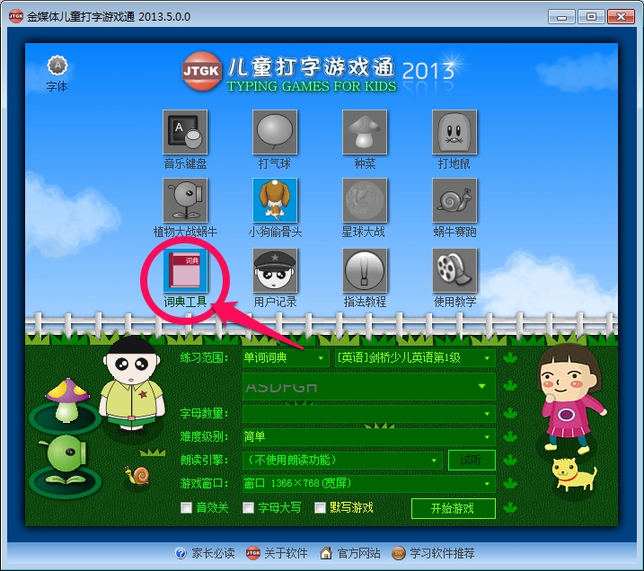
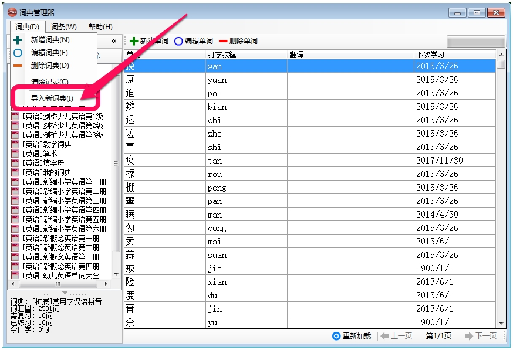
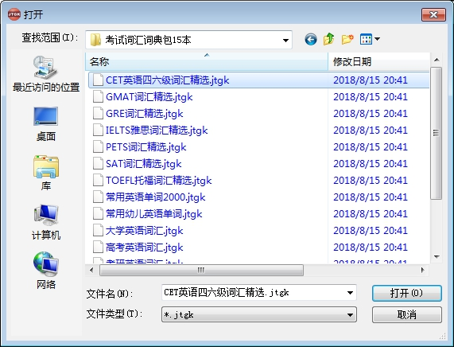

金媒体儿童打字游戏通官方额外词典下载及安装方法
一、词典下载
词典包括：《高考英语词汇》《CET英语四六级词汇精选》《常用幼儿英语单词》《英语分级词汇》《大学英语词汇》《常用英语单词2000》《GMAT词汇精选》《GRE词汇精选》《IELTS雅思词汇精选》《考研英语词汇》《新概念英语》《PETS词汇精选》《小学英语单词》《SAT词汇精选》《TOEFL托福词汇精选》等。
二、词典的安装方法
- 启动 儿童打字游戏通，点击主界面左下角的词典工具，打开词典管理器窗口。

- 点击左上角的菜单词典 - 导入新词典，打开文件浏览窗口。

- 从文件浏览窗口找到下载的词典文件并点击打开，然后就可以在词典管理器中找到该词典了。

- 注意：这种方式一次只能导入一个词典。建议根据您的需要选择性的导入，不建议一次性全部导入，因为词典越多，越影响软件的启动速度。
** 三、高级用户操作：
如果想一次性将所有词典全部导入到软件中，先关闭儿童打字游戏通，然后将解压得到的所有.jtgk文件复制到儿童打字游戏通安装目录下的Dict文件夹下，重启儿童打字游戏通即可。